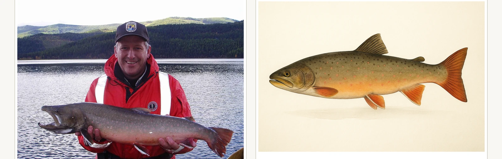

From catch photo to custom fish print.

Fishin Prints wanted a faster way to create custom fish artwork without asking the customer to wait through a slow, manual back-and-forth. The new workflow lets a customer submit one or two catch photos, then uses AI to understand the fish and prepare the artwork process for the team.
The agent reviews the image, pulls out the details an artist would normally have to inspect by hand, and turns that into a clear production brief: species cues, body shape, colors, markings, fins, tail details, and anything missing from the photo.
That brief then drives the image-generation workflow. Instead of starting from scratch on every order, the team gets a repeatable path from photo to print-ready artwork, which takes time and cost out of each piece and gives customers a shorter wait from upload to approval.